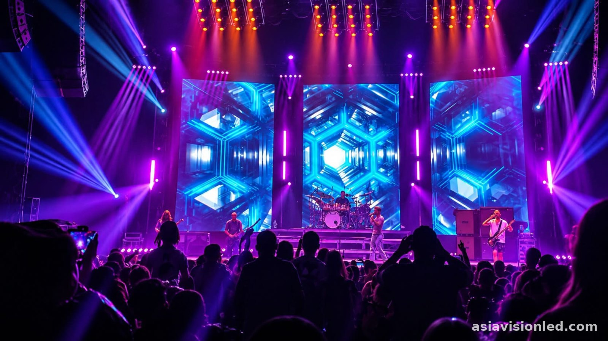
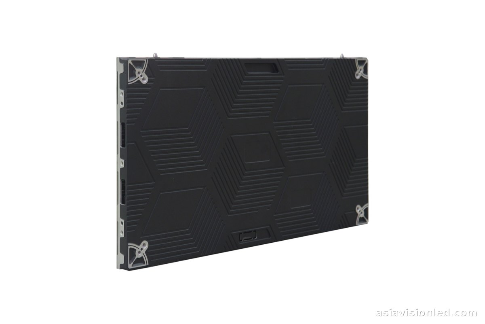
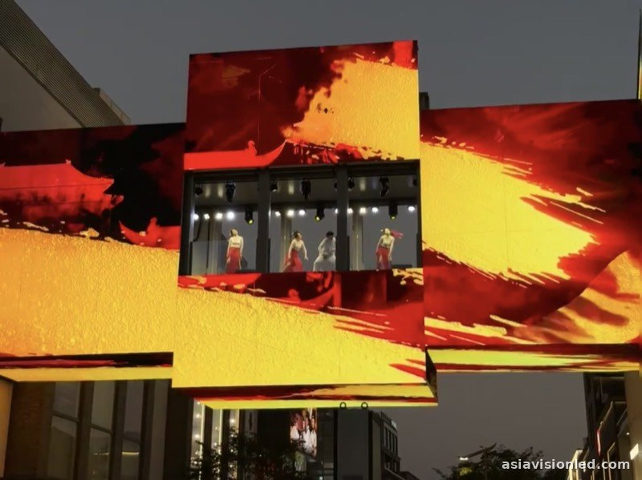
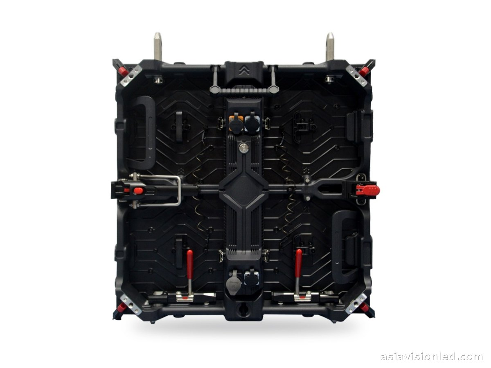
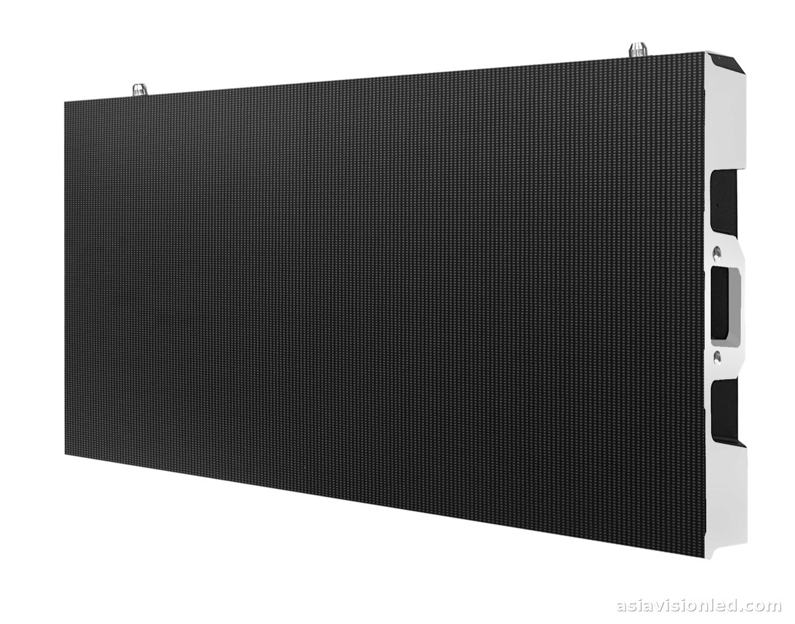

By Danny · 2026-11-17
When an LED video wall goes black, the cabinets are often still fine. The break is usually in the handshake between a source and a processor: a resolution the input will not accept, an EDID profile that changed when a laptop was reconnected, or an HDCP failure that appears only when protected content starts. A test pattern can look perfect while a film, a conferencing appliance or a switched replay deck never comes up.
This guide is for integrators, rental crews and IT teams who have to specify and troubleshoot HDMI, DisplayPort and SDI paths into an LED processor. It is not a second processor-capacity article. The existing processor buying guide explains outputs, pixel load and scaling, and mentions input connectors only in passing. It does not discuss EDID or HDCP. The ST 2110 guide covers a different, IP-based plant. This article stays with the baseband and packetised-copper inputs most rooms still use.

A port labelled HDMI, DisplayPort or SDI tells you the family of the connector, not the timing, colour format, bit depth or protection the path will actually carry. Two devices can both “have HDMI” and still fail to agree on 4K at 60 Hz, on 4:4:4 against 4:2:2, on HDR metadata, or on an HDCP version. Adapters add another translation that may or may not preserve those properties.
The cabinet side of an LED wall does not fix that. Figure 1 shows the rear of a CV-PRO cabinet. Those connectors carry the processed LED data after the processor has already accepted a source. A clean cabinet port is not evidence that the HDMI input is locked. Ask for the processor’s input matrix — every card, every port, every documented format — not a brochure line that says “HDMI 2.0” or “12G-SDI” as if the words were interchangeable.
HDMI is the usual path from laptops, media players, wireless presenters and many conferencing systems. It is also the path that carries HDCP for protected media. In a boardroom or a training room, HDMI is often the default, and therefore the default source of handshake failures when a guest laptop is docked.
DisplayPort is common on workstations and docking stations, sometimes as USB-C carrying DisplayPort video. If the processor input is HDMI, a converter is in the path. Direction, timing support and HDCP behaviour of that converter have to be known; a cable-shaped adapter is not a specification.
SDI, including 3G and 12G variants, belongs where production cameras and a switcher already live. It is a timed, professional interface with its own cable-length and format rules. It does not automatically solve EDID, because SDI sources are not being told by a display what they may output in the same way a laptop is. It also does not automatically include HDCP. If a room needs both a camera feed and a laptop feed, the processor has to have the right mix of inputs, not a single “video in” label.
Asia Vision supplies NovaStar as the default control system and Colorlight as the backup option. Which inputs exist on the unit you will actually use is a model question. This article does not invent a stocked processor list or claim that every default sender has 12G-SDI or a particular HDMI version.
EDID, Extended Display Identification Data, is the information a source reads to decide which resolutions, refresh rates and colour modes to output. On a television this is relatively simple. On an LED wall the source is usually talking to a processor, a switcher or an extender, not to the LED cabinets themselves. The source may therefore be negotiating with a device that does not represent the wall’s actual canvas.
That is why a wall can go black after a laptop is unplugged and plugged in again, after a dock is added, or after a guest machine arrives with a previous monitor’s timing still in its settings. The laptop offers 144 Hz, or a cloned desktop that mixes a 4K laptop panel with a 1920×1080 processor input, and the processor never locks. For diagnosis, a known-good 1080p/60 signal on a short cable, with a documented EDID profile loaded on the processor, is a more useful starting point than a new 4K laptop on a long lead through a dock.
Ask the vendor how EDID is managed: a fixed internal profile, a captured profile, or a custom table. Ask whether the profile survives a power cycle, and who is allowed to change it. In a room with many visiting laptops, a stable, written EDID policy is part of the design, not a technician’s preference.

HDCP, High-bandwidth Digital Content Protection, is a licence-enforced handshake on many HDMI (and some DisplayPort) paths. A moving test pattern, a desktop, or a camera feed can appear while a protected stream never does, because the source will not send the picture until every device in the chain authenticates at a compatible HDCP version.
A single unsupported extender, splitter, converter or older input can break that chain. The failure often looks identical to a cable fault: a black wall, sometimes with a brief flash. Troubleshooting should therefore separate “is there a valid unprotected signal?” from “does protected content authenticate end to end?” Acceptance tests for rooms that will play films, paid streams or certain media-server outputs must include the real protected source, not only a generator.
This article will not suggest ways to bypass HDCP. If a path cannot authenticate, the engineering answer is a compatible processor, a compatible switcher and a legal source configuration, or a different, unprotected source that the room is actually allowed to use.
Most difficult rooms are not a laptop plugged straight into a processor with a short, known-good cable. They include a dock, a USB-C converter, a wall plate, a long HDMI run, an extender kit, a matrix or an automatic switcher. Each stage can alter timing, drop HDCP, or present a different EDID to the source.
When a wall goes black, change one variable at a time. Confirm the source on a known monitor. Then use a short cable into the processor, with extenders and docks removed. Confirm that the processor shows a locked input at a standard format. Only then put the infrastructure back, piece by piece. A cable that is long enough for a television may still fail at a higher data rate into a processor. If the design needs a long run, consider a documented extender or an SDI or fibre hop that is rated for the format, rather than a hope that a longer HDMI lead will hold 4K.

Start at the processor, not at the cabinets. If the processor shows no valid input, opening modules will not help. Check the selected input, the reported resolution and frame rate, the EDID profile, scaling, and the output map to the senders. Figure 3 shows receiving hardware at the rear of a ZH touring cabinet; that is downstream of a successful handshake.
| Symptom | First checks |
|---|---|
| No picture, processor shows no lock | Source output, input selection, short known-good cable, a 1080p/60 baseline, EDID profile. |
| Desktop or test pattern works; a film or app is black | HDCP version along the whole chain, including extenders and switchers. Test the real protected source. |
| Picture appears, then drops when a laptop is docked or replugged | EDID change, dock or USB-C conversion, leftover 144 Hz or clone-mode timings. |
| One event source works; a second source on the same matrix does not | Per-input format list, EDID per port, and whether both sources were in the acceptance test. |
| Processor is locked; the wall is still dark or sliced wrongly | Output mapping, sending and receiving-card configuration, and the physical data cables — now a control-system problem, covered in the control system guide. |

Name the sources, not only the connectors: guest laptops, a resident PC, a conferencing codec, a media player, cameras, a switcher. For each, state the required timing, whether HDCP is required, and the maximum cable or extender path. Require a written input matrix for the exact processor model, a documented EDID policy, and an acceptance test that includes reconnection, a dock or converter if it will be used, and protected content if the room will play it. State what happens when a source is hot-plugged during an event.
If the same room may later move to ST 2110, say so, but do not treat an HDMI input list as a substitute for that design. The two paths have different timing and infrastructure needs. Keep baseband input, EDID and HDCP on this specification, and treat IP timing as a separate design, using the ST 2110 guide and the genlock notes already in the broadcast studio buying guide.
A meeting room or a conference all-in-one display has the same handshake risks at a smaller scale. Guest laptops, a wireless presenter and a conferencing codec are three sources, not one. The corporate meeting room guide covers the room; this article is the input-path checklist to attach to that job.
Send the source list, the room type and any processor model you already use. We will tell you what to confirm on a NovaStar or Colorlight path. Email info@asiavisionled.com or message us on WhatsApp at +86 172 7666 5558.
Request Input GuidanceChat on WhatsApp